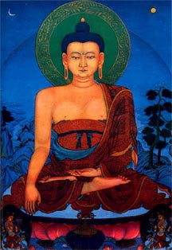

释迦牟尼（Sakyamuni）
佛教创始人。本名悉达多，意为“义成就者”（旧译“义成”），姓乔答摩（瞿昙）。因父为释迦族，成道后被尊称为释迦牟尼，意为“释迦族的圣人”。其他称号有佛陀（觉者）、世尊、释尊等。（参见彩图插而第2页）。 
早年 相传释迦牟尼是古印度吠陀时期著名的王族懿师摩王（义鸠王），即汉译“甘蔗王”的后裔，迦毗罗卫（劫比罗伐
堵）国的太子，属刹帝利种姓。迦毗罗卫是释迦族集居的小城，位于喜马拉雅山脚下，今尼泊尔南意部与印度毗邻的提罗拉科附近，当时是拘萨罗国的属国。在4世纪法显游历印度时，这个国家已日见衰落。19世纪末，考古家在这里发掘出一个藏有遗骨的石壶，上面刻有公元前数世纪流行的婆罗谜文字，意为释迦族供奉的佛骨。另外，在迦毗罗卫发现有阿育王巡幸时所建的石刻，从而证实了它大概的地理位置，以后尼泊尔政府一直在进行考古发掘。
有关释迦牟尼的生年，由于古印度典籍没有时确的记载，各国所传和学者研究，一般都是从佛教本身的史籍去考证，并从座年推算。因此说法不一，竟有60种之多。最早一说和最晚一说之间，相距达数年。斯里兰卡、印度、缅甸、泰国、老挝、柬博寨等南传佛教国家，一般认为释迦牟尼生于公元前624年，卒于公元前544年，并以此为依据，在1956～1957得举行纪念释迦牟尼尼涅槃2500周年的盛大活动。西方学者根据南传史料，对佛灭年年代有公元前489、487、486、484、483、482、478、477诸说；日本宇井伯寿根据北传史料，从阿育王即位年代公元前271年上溯116睥，推定为公元前466生、386年卒。中村元又据阿育王即位年为公元前286年，推定佛陀的生卒年为公元前463～前383年。中国年代学者依南齐僧轵跋陀罗所译《善见律毗婆沙》师资相传的“众圣点记”，即释迦牟尼逝世的当年，优波离结集律藏，并在是年七月十五日，在收后记下一点，以后每年添加一点，至南齐永明七年（489），共计得975点。由此上推，则释迦牟尼生于公元前565年，灭于公元前486年，大体上与中国春秋战国时期孔子同代，而比孔子早逝七年。此说也为日本
、印度、等国的佛教学者所采用。 中国藏传佛教格鲁派，又传有公元前1041年生、前961年灭之说。
摩耶夫人在释迦牟怪出生后的第七天去世。幼年时代的释迦牟尼是由他的姨母波提养育的。他从小学习当时教养王族应具备的一切学问和技艺（即五明）。16岁（另有17岁、18岁之说）时，娶表妹耶输陀罗为妃，生下儿子罗
罗。
出家 佛陀的贵族生活是优裕舒适的。《中阿含经》卷二十九记载他的回忆说，他拥有适合不同季节的居住的三座宫殿（三时殿），有冬天御寒的，处长天避署的，雨季防潮的；衣着华贵，饮食丰盛；歌舞于庭，极尽享受之乐。他的父亲净饭王也对他寄予厚望，希望他能继承王位，成为统一天下的“转轮王”。但是，释迦牟尼却在29岁（一说19岁时出家修行。究其原因，有社会的，也有个人的。佛陀所处的时代正是古印度各国之间互相讨伐、并吞，阶级和民族矛盾十分尖锐之际，他所属的释迦族，受到邻国强权的威胁，朝不保夕。他已预感到难免覆灭的结局，因而认为世间“无常”。另外，他又目睹人自有生以后，接踵而来的老、病、死情景，联想到自己也摆脱不了同样的命运，从而产生了人生难脱苦难的烦恼，而当时婆罗门教的思想和行事，又不能使他在精神上获得解脱之道，终于舍弃王位，出家修行。
出家后，他先到跋伽山人的苦行林，那里有很多修行者，他们以种种苦行折磨肉体，以求得精神的解脱。释迦牟尼不满意这种做法，滞留一宿便离去他的父亲所到他的出家的消息，甚为悲伤，经派人劝说无效，便在亲族中选派了阿若
陈如、阿说示、跋提、十力迦叶、摩诃男的利等五人伴随他。
释迦牟尼南渡恒河，到摩揭陀的首都王舍城，国王频婆沙罗会见了他。尔后，他寻访隐栖于王舍城附近山林的数论派信奉者阿罗逻·迦罗摩和郁罗迦·罗摩子，修习禅定。然而他们的教义，在释迦看来，仍然不是真正的人生解脱之道。于是他又来到伽山若行林，在尼连禅河边静坐思维，实行苦行。经过6年，仍没有获得所期望的结果。他决定抛弃绝食和苦行，来到菩提伽耶一棵毕钵罗树下，经跏趺坐，静思冥索，最后终于觉悟成道，时年35岁。
传教 释迦牟尼证悟以后，形成了自己的独特的观察和分析事物的观念。为了使他的思想学说被他人所理解和接受，他便开始了长达45年的传教活动。佛陀在波罗奈斯城外的鹿野苑，向阿若
陈如等五人，宣说四谛、十二因缘、三十七菩提会、五蕴、四禅和三明等教说，五人皈依了他，成为最初的佛弟子。这次说教，佛教称为初转法轮。与此同时，又度波罗奈斯长者之子耶舍及其亲友出家。此外，化度了原先祀火的婆罗门迦叶三兄弟以及沙门“六师”之一的怀疑论者散惹夷（删
耶）的学生舍利弗和目犍连，此后在他的故乡又说服了他的很多亲属如堂弟提婆达多、儿子罗 罗皈依了佛教。
释迦牟尼传教的区域，订是恒河流域的中印度。大致是北到迦毗罗卫，南到王舍城，东到瞻波，西到 赏弥（拘
弥）。其直传弟子的活动地区和影响所及，东至恒河流域下游，南至高达维利河畔，西至阿拉伯海沿岸，西北至怛义尸罗等地区。佛陀居住时间最长的是拘萨罗国的舍卫城和摩揭陀国的王舍城。前者有富商须达多和太子祗陀（逝多）捐赠的祗园精舍（又名“给孤独园”），后者有竹林精舍，为释迦牟尼对众人说法布教的重要场所。跋耆、鸯伽、末罗、伽尸等国，他也曾居留说法。
释迦牟尼的传教的方式，是随机的施设，不拘一格。他用偈颂、散文、故事、譬喻、直叙、问答等各种形式，在不同的场合，针对不同的对象，宣说不同的内容。对僧众谈论出离生死、证得无上正觉，对俗人谈论道德的行善。他准许弟子可不用规范化的梵语，而用地区方言进行说教。这就使得他的思想学说在社会上得到广泛的传播。
僧伽 佛陀在传教过程中建立了佛教的组织——僧伽（僧团），一般认为，释迦牟尼在鹿野苑初次演教，阿若
陈如等五人皈依佛教，便是佛教僧伽之始。这个僧团在传教过程中逐渐扩大，开始只收男弟子（比丘），以后，他的姨母波 波提入教后，才开始接纳女弟子（比丘尼）。
僧团在开始的时候并无严格的制度，凡是信仰佛陀的学说，不分种姓贵贱，均可加入。在僧团内部过着平等的生活。以后为了防止僧团的混杂，避免与世俗社会的法律秩序和其他伦理道德相龉，使僧团更好地开展活动，才制定了奴隶、负债者、杀人犯、盗贼（悔过的除外）、残废、病人以及年不满20岁者不能加入僧团的具体的规定。
起初，僧团以云游乞食为主，无固定的住处。后来为了适应雨季安居和集地的需要，才开始在僧众的所在地，建立了僧院。在僧众集体生活的过程中，又陆续制定了有关衣着、饮食、用具、礼仪、居所、医药等日常生活细则，作为僧团全体成员共同遵守的戒律内容。
佛陀在创立僧团的同时，还给在家的信徒以相应的地位。凡遵守不杀生等“五戒”的俗人，均可以成为佛弟子。他们在修行同样可以证得涅槃。相传，耶舍的父母是最初的在家弟子——优婆塞和优婆夷。此后，在家信徒人数不断增多，成为与僧团并行的拥护佛教的社会力量。
涅槃释迦牟尼晚年居住在王舍城。相传，他曾多次召集住在那里的僧人，向他们讲了有关保持僧团不衰的原则，要求他们“依法而不依他处”，然后离开王舍城北行，开始了他最后的游化。他带领弟子们，经过那烂陀、波吒厘弗多罗，渡恒河，到达吠舍离，受到当时富裕的妓女庵婆波利（庵摩罗）的供奉。以后便来到吠舍离附近的贝鱼伐那村（竹林村）。时值雨季，释迦牟尼决定在那里安居，留阿难陀一人随从，其余弟子均分散到各处居住。在雨季中，他患了重病。雨季过后，又继续起程，向西北地区巡游讲说。到了南末罗国的波伐城（亦译“婆瓦村”），驻锡铁匠纯陀的芒果林中，并吃了他供献的食物。食后，释迦牟尼中毒腹写，病情转重。行至离拘尸那迦城（今印度联合联合邦迦夏城）附近的希拉尼耶伐底（或译阿利罗跋提、阿恃多伐底）河边的娑罗林，在两棵沙罗树之间，右胁而卧，半夜入灭。临终前，他告诫弟子要依法精进修行。又为求见的婆罗门须跋陀罗说法，使他成为最后一个弟子。终年80岁。
释迦牟尼逝世后，遗体火化。遗骨（舍利）为摩羯陀王阿阇世、吠舍离的离车毗族、迦毗罗卫的释迦族、阿摩罗迦波的布利族、罗摩伽摩的俱利子族、波伐的末罗族（南末罗国）、拘尸那迦的末罗族（北末罗国）和呔多底波的婆罗门分得，各建舍利塔供养。
史料
有关释迦牟尼一生的事迹，在早期佛教经藏四阿含和小乘律藏中，尚无专让的记述。三藏的结集者，主要记录释牟尼的言辞。但是经藏和律藏在记录言辞中，详细地记述了每一段教和制订第一条戒律的原委。这些记述，虽属片断，但也包含了佛陀直接接触的那些人对佛陀的思想和行事的回忆（其可靠性如何，已无法考证）。另外，在经、律中通过佛陀自己之口，记载了他自己早期生活的经历。在早期经藏和律藏中，记载释迦牟尼家世和出家经过的，有《长阿含经》中的《大本经》等；记载初转法轮时情影的，有《杂阿含经》中的《转法轮经》等；记载教化活动的有《摩诃僧祗律》、《四分律》、《五分律》等以及阿含经中的诸小经；记载释迦牟尼晚年生活的有《长阿含经》、《般泥洹经》以及《根本说一切有部毗奈耶杂事》等。
后来，随着佛教向印度次大陆发展，统一的佛教分成很多的派别，同时受到了印度教、耆那教的偶像崇拜以及希腊文化的影响，在部派佛教中出现了对教祖的崇拜，把佛陀描写为神通广大、威力无穷、大智大慧，具有“三十二相”、八十种好，如手长过膝、面颊如满月、梵音深远、胸表
字等。这就出现了专门记载释迦牟尼生世行业，被称为“本生”、“本起”、“本行”的一类经典。如《修行本起经》（异译《瑞应本起经》、《经过现在因果经》、《佛本行集经》）、《普曜经》等。它们的特点是把原行散见于经藏和律藏中的资料联贯起来，使一事与他事前后衔接，缀成佛陀的传记。但在内容上完全是泻染和神化佛陀，使佛陀成为一个理想化的崇仰对象。这些经典最长的也只主要记述了释迦牟尼成道后最初几年的活动。以后马鸣写了《佛所行赞》，他根据传说和资料，描绘了佛陀一生的经历，成为最早的一部完整佛传。
中国僧人撰写的释迦牟尼传记，有梁僧 的《释迦谱》五卷和唐道宣《释迦氏谱》一卷。此外，在宋志磬的《佛祖统纪》中有编年体的《教主释迦牟尼佛本纪》。
有关释迦牟尼生平的史料，除了佛教经典的记载以外，还有文物资料。近代，印度和其他国家的考古学家、佛学家根据法显的《佛国记》和玄奘的《大唐西域记》的记载以及印度保存的不完整史料，在佛陀的诞生、成道、初转法轮、涅槃处等陆续发掘出一些古建筑的遗址和文物，并以证明了佛陀是一个历史性的人物。（边部）